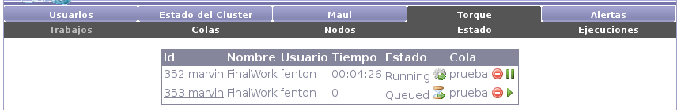

Next: Colas Up: Torque Previous: Torque Contents

En el submenú de trabajos de Torque podemos ver todos los trabajos del sistema; los que se encuentran en ejecución, los que se encuentran en espera para iniciar su ejecución, los recientemente finalizados y los detenidos.
Además se muestra información de los trabajos (usuario que lo ejecuta, tiempo de ejecución, etc.) y permite realizar acciones básicas sobre ellos (detener, iniciar, etc.).